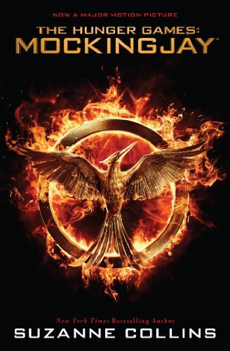
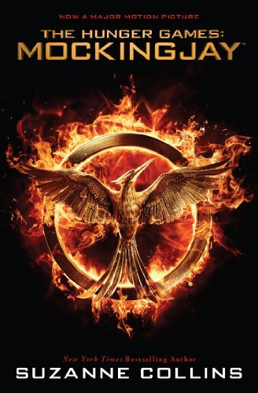

MOCKINGJAY
 

#1 USA TODAY BESTSELLER
#1 NEW YORK TIMES BESTSELLER
#1 WALL STREET JOURNAL BESTSELLER
#1 PUBLISHERS WEEKLY BESTSELLER
NEW YORK TIMES NOTABLE CHILDREN'S BOOK OF 2010
PUBLISHERS WEEKLY'S BEST BOOKS OF 2010: CHILDREN'S FICTION
A BOOKLIST EDITORS' CHOICE, 2010
A KIRKUS BEST BOOK OF 2010
NPR BEST BOOKS OF 2010
A NEW YORK TIMES EDITORS' CHOICE
A CHRISTIAN SCIENCE MONITOR'S BEST CHILDREN'S BOOKS OF 2010
AN IRA YOUNG ADULTS' CHOICES BOOK FOR 2011
YALSA'S TEENS' TOP TEN, 2011
2011 CHILDREN'S CHOICE BOOK AWARD TEEN CHOICE BOOK OF THE YEAR NOMINEE AUTHOR OF THE YEAR NOMINEE
CCBC CHOICES 2011
2011 LOCUS AWARD FINALIST
2010 NEBULA AWARD ANDRE NORTON AWARD FOR YA SCIENCE FICTION AND FANTASY NOMINEE
BARNES & NOBLE BEST TEEN BOOKS OF 2010
AMAZON BEST BOOKS OF 2010: #3 ON CUSTOMER FAVORITES LIST
"At its best the trilogy channels the political passion of "1984," the memorable violence of "A
Clockwork Orange," the imaginative ambience of "The Chronicles of Narnia" and the detailed
inventiveness of "Harry Potter." The specifics of the dystopian universe, and the fabulous
pacing of the complicated plot, give the books their strange, dark charisma."
--The New York Times, Katie Roiphe
"Collins does several things brilliantly, not the least of which is to provide heart-stopping
chapter endings that turn events on their heads and then twist them once more. But more
ambitious is the way she brings readers to questions and conclusions about war throughout the
story. There's nothing didactic here, and sometimes the rush of events even obscures what
message there is. Yet readers will instinctively understand what Katniss knows in her soul, that
war mixes all the slogans and justifications, the deceptions and plans, the causes and ideals
into an unsavory stew whose taste brings madness. That there is still a human spirit that yearns
for good is the book's primrose of hope."
--Booklist, STARRED REVIEW
"This dystopic-fantasy series, which began in 2008, has had such tremendous crossover appeal
that teens and parents may discover themselves vying for -- and talking about -- the family copy
of "Mockingjay." And there's much to talk about because this powerful novel pierces cheery
complacency like a Katniss-launched arrow. Look skeptically at computer and television images,
it suggests, be aware of spin, gaze upon the young faces of the world's soldiers. Children
forced to kill children? It's not just in the pages of a novel."
--The Washington Post
"The indelible conclusion to Suzanne Collins' Hunger Games trilogy proves once more that the
greatest fantasy novels hold an incandescent mirror up to reality."
--Parade, Parade Picks
"But being the Mockingjay comes with a price as Katniss must come to terms with how much of her
own humanity and sanity she can willingly sacrifice for the cause, her friends, and her family.
Collins is absolutely ruthless in her depictions of war in all its cruelty, violence, and loss,
leaving readers, in turn, repulsed, shocked, grieving and, finally, hopeful for the characters
they've grown to empathize with and love. Mockingjay is a fitting end to the series that began
with The Hunger Games (2008) and Catching Fire (2009) and will have the same lasting resonance
as William Golding's Lord of the Flies and Stephen King's The Stand."
--School Library Journal
"The final installment, the grimmest yet, is a riveting meditation on the costs of war...Clear
your schedule before you start: This is a powerful, emotionally exhausting final volume."
--People Magazine,4 OUT OF 4 STARS
"This concluding volume in Collins's Hunger Games trilogy accomplishes a rare feat, the last
installment being the best yet, a beautifully orchestrated and intelligent novel that succeeds
on every level... In short, there's something here for nearly every reader, all of it completely
engrossing."
--Publishers Weekly, STARRED REVIEW
"Fans will be happy to hear that Mockingjay is every bit as complex and imaginative as Hunger
Games and Catching Fire. Collins has kicked the brutal violence up a notch in an
edge-of-your-seat plot that follows Katniss as she tries to fulfill her role, protect her mother
and sister and, in the end, finally choose between her two greatest loves. B+."
--Entertainment Weekly
"Mockingjay" is without question the most brutal of the trilogy. Nobody emerges unscathed – very
bad things happen to everyone from fan favorites down to characters so minor a reader has to
pause and think, "Now, who was that again?" before recoiling in horror at their fate. Collins
doesn't take war lightly – her characters debate the morality involved in tactics used to try to
overthrow the rotting, immoral government, and they pay a high cost for those tactics. It is
also an entirely gripping read. In Katniss, Collins has crafted a heroine so fierce and
tenacious that this reader will follow her anywhere."
--Christian Science Monitor
"Much of the action takes place on a battlefield akin to Iraq — where innocent civilians are
murdered to further a cause and each side resorts to unsavory tactics that could lead to a
terrorist label. More maudlin than the first two books in the series, "Mockingjay" is also the
most violent and bloody and, based on the actions and statements of its characters, its most
overtly antiwar — though not so much that it distracts from a series conclusion that is nearly
as shocking, and certainly every bit as original and thought provoking, as "The Hunger Games."
Wow."
--Los Angeles Times
"Suspenseful... Collins' fans, grown-ups included, will race to the end."
--USA Today
"Throughout the trilogy, Collins has asked readers to consider heavy questions. What level of
violence is justified to achieve needed change? How much integrity can one compromise for a just
end? To what extent does responsibility to others demand sacrifice of self? How much control
does anyone have over the construction of self? Katniss is the ideal vehicle for this dialogue,
her present-tense narration constantly putting her own motivations and even identity under
scrutiny.It's not giving away anything to reveal that Katniss will be tested sorely, that
allegiances will shift, that heart-thumping scenes of combat will yield to anguished reflection,
that she and readers will find themselves always wondering just whom to trust, that she and
readers will lose friends they love. In the final analysis, this is exactly the book its fans
have been hoping for. It will grab them and not let go, and if it leaves them with questions,
well, then, it's probably exactly the book Collins was hoping for, too."
--Kirkus, STARRED REVIEW
Selected Works
PICTURE BOOK
YEAR OF THE JUNGLE"Important and necessary."
--Kirkus Reviews, STARRED REVIEW
WHEN CHARLIE MCBBUTTON LOST POWER
"A clever, humorous story in rhyme"
--School Library Journal
SCI-FI
CATCHING FIRE“...doesn’t disappoint when it segues into the pulse-pounding action readers have come to expect.” --Publishers Weekly, STARRED REVIEW
THE HUNGER GAMES
“...a superb tale of physical adventure, political suspense, and romance."
--Booklist, STARRED REVIEW
FANTASY
GREGOR THE OVERLANDER
“...readers will likely find [the Underland] to be a fantastically engaging place.”
--Publishers Weekly, STARRED REVIEW
GREGOR AND THE PROPHECY OF BANE
“Yessss!”
--Kirkus Reviews
GREGOR AND THE CURSE OF THE WARMBLOODS
“...immensely readable installment..."
--The Horn Book Magazine
GREGOR AND THE MARKS OF SECRET
"...will leave readers gasping..."
--Kirkus Reviews, STARRED REVIEW
GREGOR AND THE CODE OF CLAW
"...excellent acquisition for any library."
-VOYA
QUICK LINKS
Scholastic
Penguin Group
NPR
Listening Library
Indie Bound
Barnes & Noble
Books-A-Million
Amazon
Authors Guild